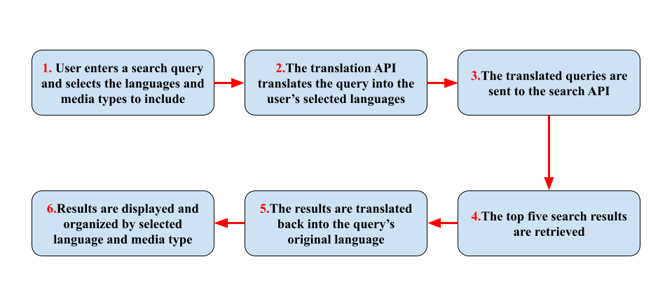
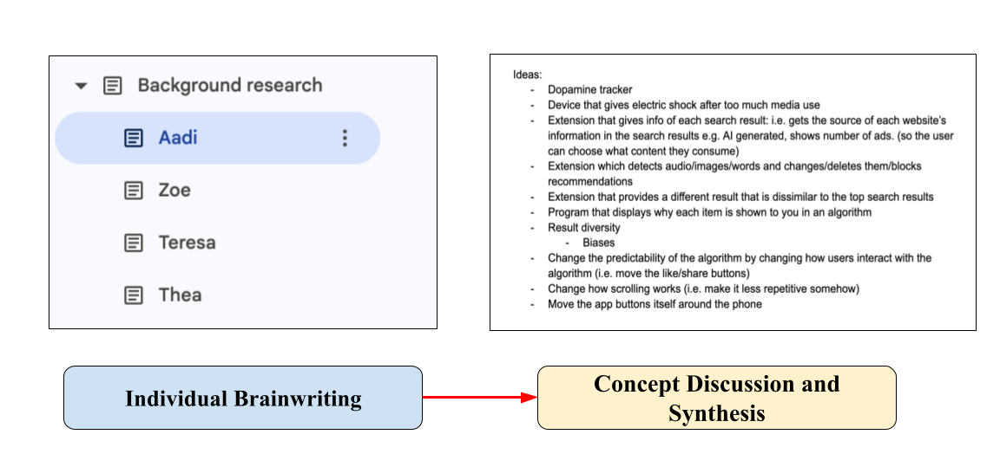
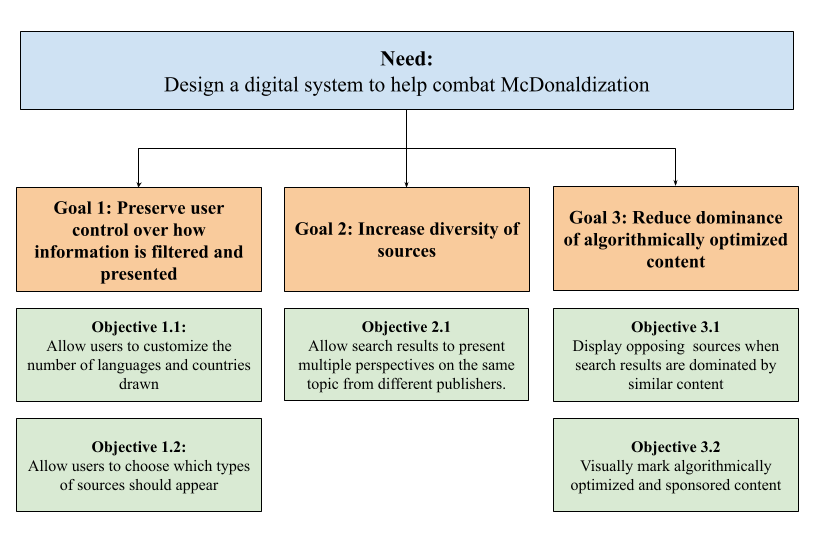

Overview
Search Scramble was a hackathon project created in response to a challenge on McDonaldization and enshittification in digital systems. The goal was to design a tool that could push back against increasing sameness, predictability, and exploitative platform behaviour. We chose to focus on web search, where results often privilege the same kinds of sources, perspectives, and regions, narrowing how users understand a topic. Within the limited time of the hackathon, we designed a browser extension concept that expands user queries across multiple languages and regions and allows filtering by content type, such as news, blogs, research, and tutorials.

This workflow was designed to help users compare information across languages, regions, and media types more easily. In doing so, the extension aimed to support a broader and more intentional search experience.
Get access to the code: here (own translation and search API is required)
Design Process & Key Design Decisions
Even within the time constraints, our design process still followed an iterative FDCR structure, with most of the work concentrated in the Framing, Diverging, and Converging stages. Although we developed a prototype, it mainly served to communicate the concept, since the project did not progress into formal testing or evaluation
.png)
We began by aligning team values, stakeholder needs, and a shared direction for the project. From there, research and framing helped us move from a broad challenge about enshittification toward a more defined design space. One of the key decisions was to design for feasibility: rather than trying to redesign the entire search system, we focused on the user’s experience of search results. We also decided to design for diversity and user agency, since the extension was intended to help users access a wider range of perspectives across languages, regions, and media types.
CTMF
1. Scoping
Scoping is a framing tool used to set the limits of a project. In this case, it helped us decide which parts of the larger system we were prepared to engage with and which we would leave outside the project. Rather than trying to change how search engines rank information, we focused on what could be added around that system through a browser extension. That boundary gave the project a more realistic scale and made later design decisions easier to justify.

Scoping helped the project by making the problem manageable within the limited time of the hackathon. Without it, our team could easily have chosen a direction that was too ambitious or too broad to develop meaningfully. I think the main strength of scoping is that it protects the project from becoming unrealistic, while still leaving room for creativity within those boundaries. It also helped our teamwork because it gave us a clearer sense of what we were and were not trying to solve. A limitation, however, is that scoping can sometimes make a project too narrow if the boundaries are set too early or too rigidly. In the future, I would use scoping not just as a way to reduce complexity, but also as a way to consciously justify why certain parts of a system are excluded. That would make my design decisions feel more intentional rather than simply constrained by time.
2. BrainWriting
Brainwriting is a diverging tool that allows team members to generate ideas individually. Because it is silent and structured, it creates space for equal participation, reduces early groupthink, and supports a broader exploration of possible directions.

Brainwriting helped the project by generating more ideas than a normal discussion probably would have, especially because our team members came from different disciplines and did not yet know how each other worked. It supported more balanced participation, which I think was important in making the teamwork feel fair and collaborative. One strength of brainwriting is that it allows quieter people or people who need more time to think to still contribute meaningful ideas. It also helped us avoid settling too quickly on the first idea that sounded good. One weakness, though, is that brainwriting produces many raw ideas, but does not by itself help evaluate which ones are strongest or most feasible. That means it works best when followed by a converging tool. In the future, I would interpret brainwriting as most valuable in the early stage of a project when variety matters more than polish. I would also make sure to connect it more clearly to the next stage, so that strong ideas are not lost when the team begins narrowing down options.
3. NGO
Needs–Goals–Objectives (NGO) was one of the Concepts from Praxis we used in this project. NGO helped structure the problem by separating it into three levels:
- needs: defines the core problem or opportunity
- goals: describe what the system should do in response
- objectives: translate those goals into more specific targets that can guide later requirements and evaluation.
In the context of the EWB Hackathon, NGO was especially useful because the design space was extremely open. The challenge of McDonaldization and enshittification could have led in many different directions, so it was important to clarify early on what problem we were actually trying to address and what success would look like. In this project, NGO acted as a converging tool: it helped our team narrow a broad theme into a more focused design opportunity, align around a shared understanding of the problem, and move forward with a clearer basis for decision-making. I found it valuable because it turned a vague and highly conceptual prompt into something more structured, discussable, and actionable.

Using NGO helped the project by giving our team a shared foundation before we started developing solutions. It made the discussion more focused and reduced the risk of everyone interpreting the challenge differently. I think one strength of NGO is that it turns a vague problem into a structured one, which is especially valuable in a fast-paced project like a hackathon. At the same time, one weakness is that a strong NGO does not automatically lead to a strong prototype. In our case, even though our NGO was relatively solid, we did not carry that same clarity into the features of the extension itself. In future projects, I would interpret NGO not only as a tool for defining the problem, but also as something I should keep referring back to when deciding what must appear in the prototype. That would help ensure that the final design reflects the original objectives more clearly.